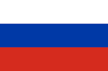

РУССКИЙ
Изучение русского языка онлайн

Русский язык — государственный язык Российской Федерации, один из двух государственных языков Белоруссии, один из официальных языков Казахстана, Киргизии и некоторых других стран, основной язык международного общения в Центральной Евразии, в Восточной Европе, в странах бывшего Советского Союза, один из шести рабочих языков ООН, ЮНЕСКО и других международных организаций. Число владеющих русским языком в России составляет 137,5 млн человек (2010). Всего в мире на русском говорят около 260 млн человек (2014).
На нашем сайте вы сможете найти следующие материалы для изучения русского языка
- Видео-уроки
- Видео-уроки по русскому языку
- Литература
- Essential Русский язык для начинающих.Ю.Г.Овсиенко.
- English Русский язык как иностранный. О.Е.Сергеева.
- Сайты для обучения онлайн
- Курс LingQ
- Видео-курс изучения русского языка